|
sittingbourne | august? |
news | messages |
media |
links 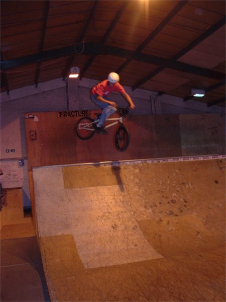 it rained so i went to sittingbourne with gregory. this guy said he had only been riding for a few months. 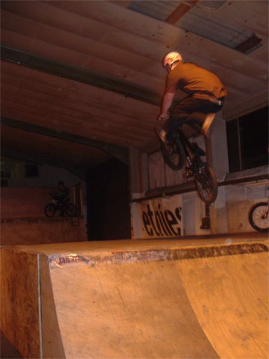 wild no foot can / two foot can 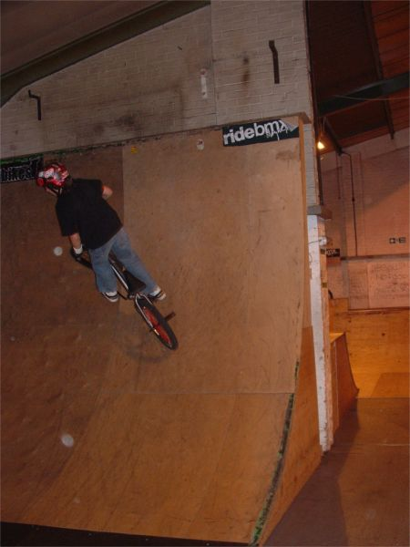 gregs on the vert wall 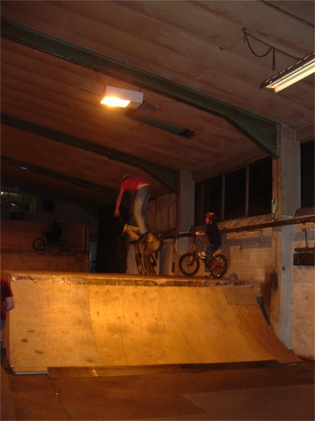 these pictures suck by the way 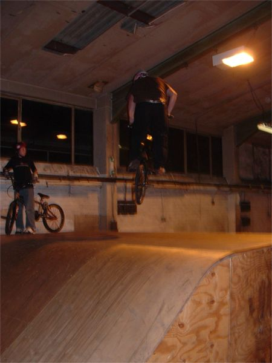 360 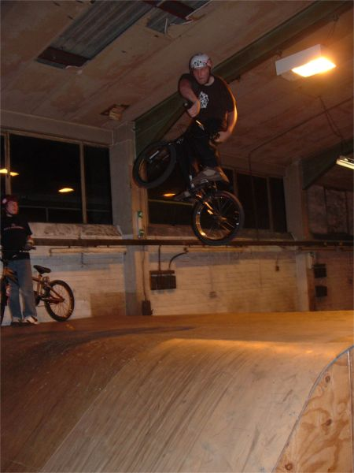 turndown 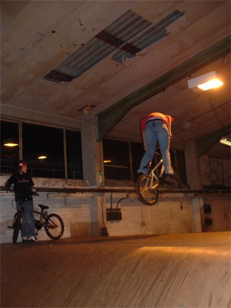 360 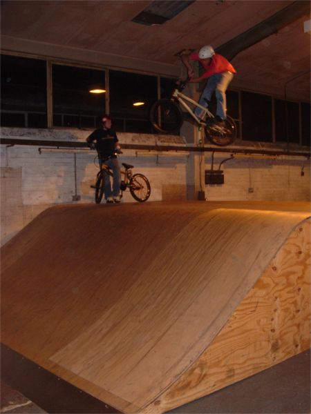 xup 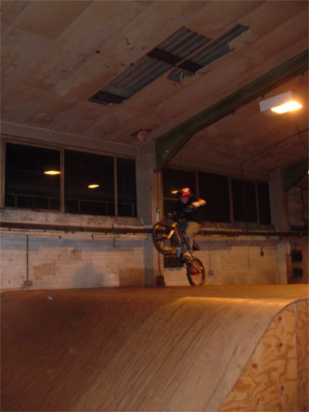 gregs 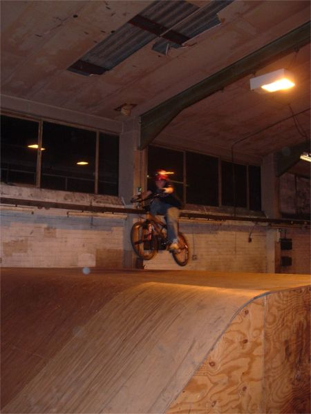 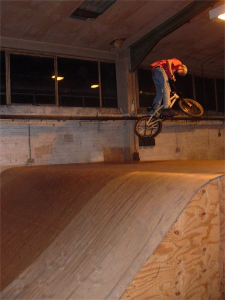 360 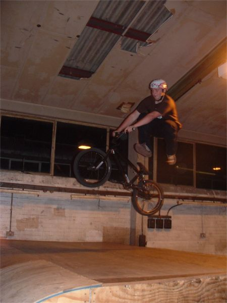 this guy did 360 turndowns but i missed them. sittingbourne | august? | news | messages | media | links |